开始
Home
剪贴板
- 说明
- . 剪贴板的相关设置
-
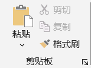 剪贴板 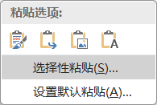 点击下拉 普通粘贴 Ctrl+V：将复制的内容粘贴|插入到当前位置选择性粘贴：在"粘贴"面板的下拉菜单中选择格式刷：将源对象的样式引用|刷到目标对象；默认情况下，一次只能刷一次；双击 可以多次刷格式点击更多，获取更多剪切板操作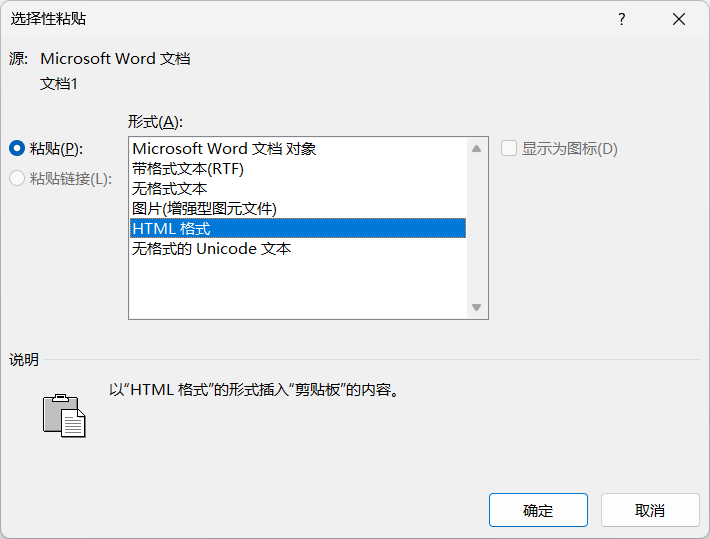 选择性粘贴
字体
- 说明
- . 字体的相关设置
- . 先选择再设置
- . 推荐在"设计"选项卡中统一设置
-
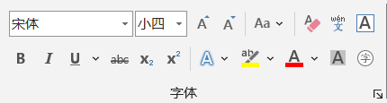 字体 - 字体
- 字号
- . 可以使用正文表示，如三号；也可以使用数字表示，如12
- . 数字表示的是磅，在段落的行间距中也会用到
- . 一般字号多少磅，行间距应该大于或等于字号的磅数
- 文字样式
- . 加粗、倾斜、下划线
- 文字颜色
- 特殊文字样式
- . 上标、下标、拼音、拼音、背景颜色等等
- 清除文字样式
- . 来历不明或较早版本的文档，通常调整或修改比较麻烦，建议清除格式后重新设置
- . 点击更多，可以设置更多文字样式，如中文字体和英文字体、缩放、间距等
段落
- . 段落的大多数操作不需要选择，只需要把光标定位在段落任意位置即可
-
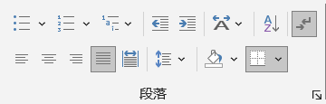 段落 - 项目符号
- . 无序；点击可以自定义符号
- . 默认会添加"悬挂"属性，如参考文献的使用。正文通常只需要首行缩进
- . 调整：在"段落"对话框，取消特殊格式"悬挂"并确定；再次设置特殊格式为"首行缩进"并确定；注意，"左侧缩进"应为0
- 编号
- . 有序，点击可以自定义适合中文的样式
- 多级列表
- . 一般不超过3级
- . 可以单独使用，也可以和标题配合使用：要么定义多级列表时和对应的标题关联起来；要么将已经设置好的标题应用到多级列表
-
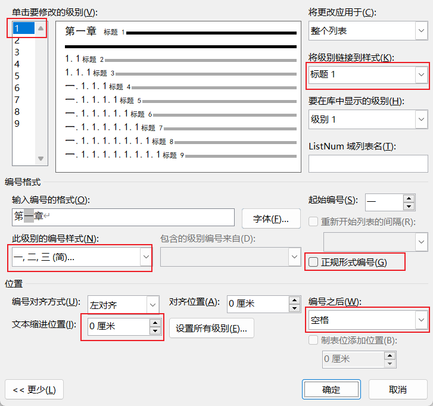 多级列表和标题样式关联 - 缩进
- . 增加、减少
- . 通常配合符号、编号和多级列表一起使用
- 单独使用多级列表
-
准备文案：使用lorem(p,l)快速生成若干段落p若干行l的占位文本添加多级列表：全选文案，点击"多级列表"右侧的，选择列表库中左侧对齐的样式调整级别：定位到某一个段落，根据级别，单击"增加缩进量"，文案将自动缩进并添加上级的编号调整缩进：右键单击某个一级编号，参照上图，修改"文本缩进位置"为0，并设置所有级别都为0
- 多级列表和目录
- 中文版式
- . 其中双行合一不可以使用居中对齐，必须是两端对齐，否则上下行字数不等时不能对齐
-
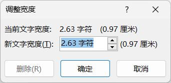 中文版式 - 排序
- . 按照段落或标题升序或降序
- . 可指定3级排序
- . 参考文献和名单的按首字拼音排名
-
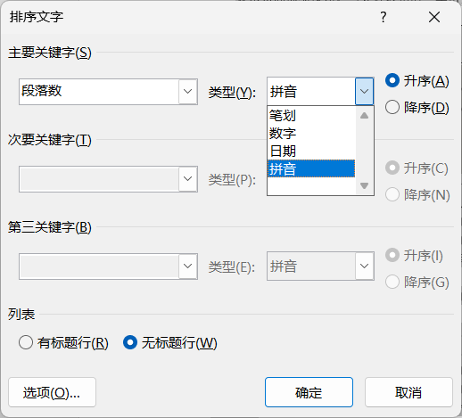 排序 - 显示/隐藏标记
- . 开关：可以直观的看出文档使用的各种标记
- 对齐
- . 左对齐
- . 水平居中对齐
- . 右对齐
- . 两端对齐；默认
- . 分散对齐
- 底纹
- . 背景颜色|底纹
- 边框
- . 段落可以自定义边框的范围，普通文字不可以
-
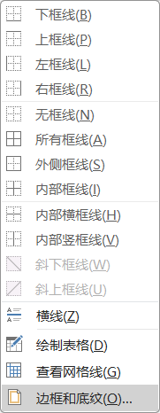 边框底纹 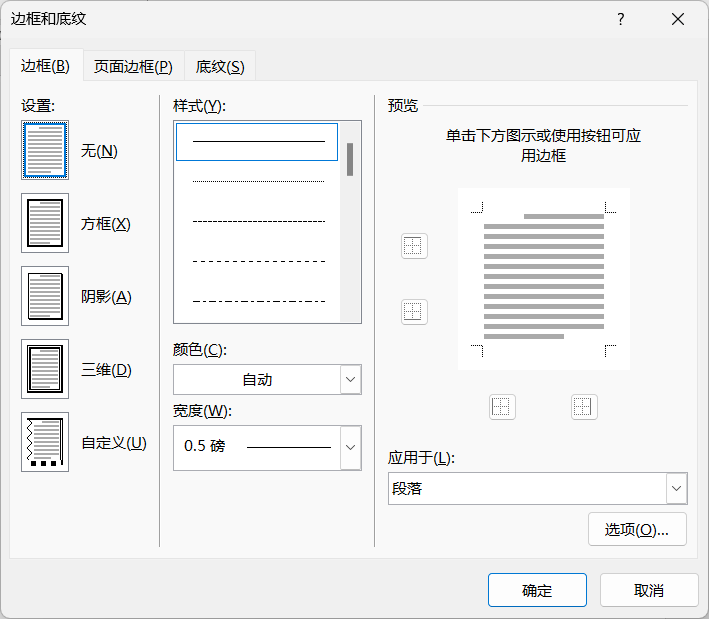 边框底纹 - 其他
- . 点击更多，可以设置：
-
缩进和间距
. 大纲级别、段落的缩进、段落前后间距、行间距
. 参考文献通常悬挂缩进
. 指定了大纲级别，会在 "视图" → "导航窗格"中显式，便于快速跳转和编辑；可以通过拖拽的方式重新调整顺序
换行和分页. 孤行控制：页面顶部仅显示段落的最后一行，或页面底部仅显示段落的第一行，那么这样的一行则被称为孤行；为避免在文档排版中出现这种情况，应选中该选项
. 与下段同页：保持前后两个段落始终处于同一页中。这一设置的最常用的场景是在表格、图片等前后带题注时，通过该设置保持表格或图片等与题注不分离，始终处于同一页中，避免出现表格在一页，题注在另一页的情况发生
. 段中不分页：是指保持段落始终位于同一页中，而不会被分开显示在两页中
. 段前分页：当前段落开始自动显示在下一页，这一设置相当于在该段之前自动插入了一个分页符。这一设置相比手动分页而言更加容易控制，并且作为段落格式可以定义在样式中；如文章的章节标题都应该另起一页，可以简单的在章节标题样式中，设置段落为段前分页，避免手动插入分页符
中文版式. 中英文混排时，容易出现英文大块空白的情况，勾选"允许西文在单词中间换行"
. 图文混排时，文字和图片垂直居中，将"文本对齐方式"调整为"居中"
-
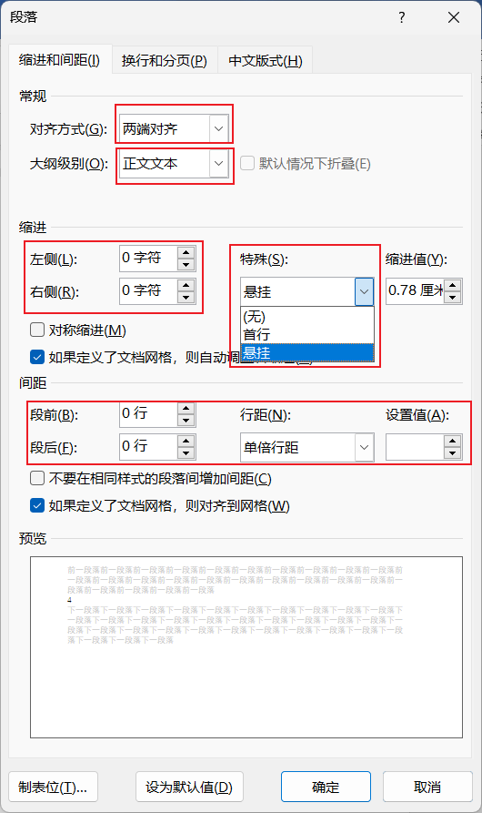 常规、缩进、间距 -
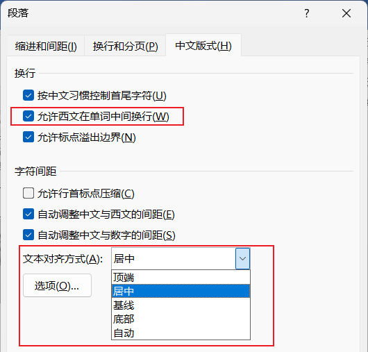 中文版式
样式
- . 系统内置的样式，可以直接使用，也可以修改样式，还可以创建自己的样式以及管理样式
- . 创建目录或题注时，系统会自动生成对应的样式；如需要调整，请修改对应的样式
- . 不同的样式通常对应着不同的大纲级别
- . 有了大纲级别，可以更加方便的排版页面
- . 点击更多，获取更多操作
-
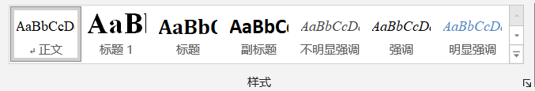 样式 -
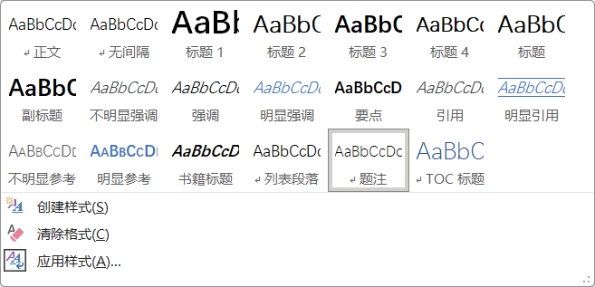 样式 - 更新样式
- . 先在文档中设计格式，最后在样式库中右键单击某个样式 → "更新..."，系统将设计的格式更新|替换到当前样式
- . 通常是先应用样式，修改好后再更新到样式；也可以直接修改样式
- 修改样式
- . 在样式上右键单击，选择"修改"
- . 在弹出对话框的"格式"中，可以调整更多样式
- . 不要修改"正文"样式。它是所有样式的基础
- 创建新样式
- . 点击更多，在弹出的对话框底部，选择"新建样式"
- 应用样式
- . 打开指定的内容对应的样式，方便调整
- . 也可以直接在样式库中找到对应的样式再修改
-
Tips. 通常只设置"字体"和"段落". 可以为样式指定快捷键
- 标题3样式哪里去了？
编辑
- 说明
-
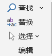 编辑 -
查找 Ctrl + F替换 Ctrl + H：利用对话框底部的"格式"和"特殊格式"，配合通配符，实现更强大的操作选择：类似的文本，便于快速调整样式